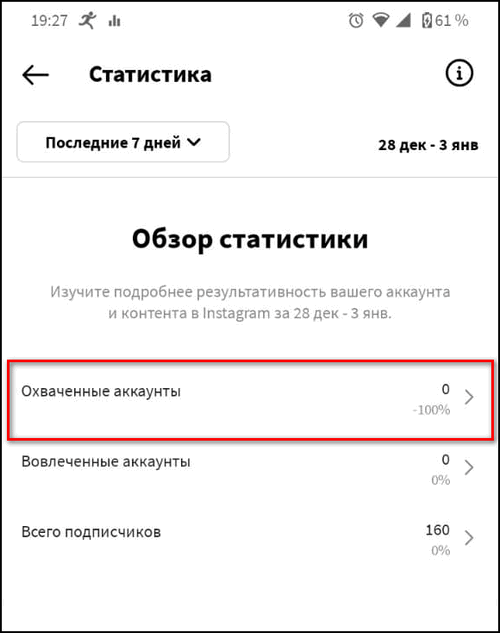
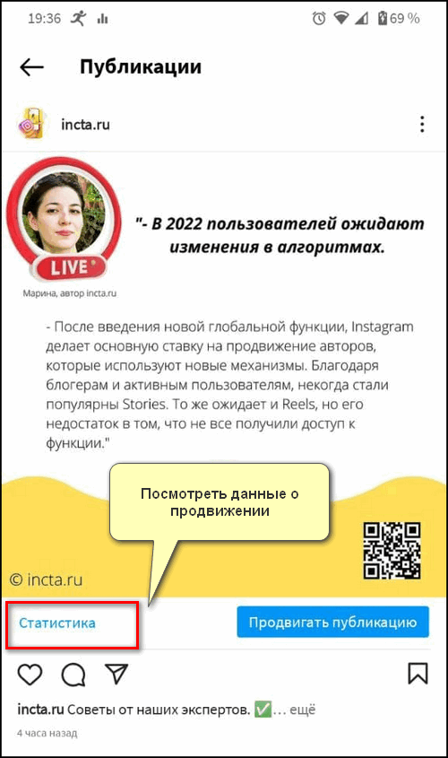
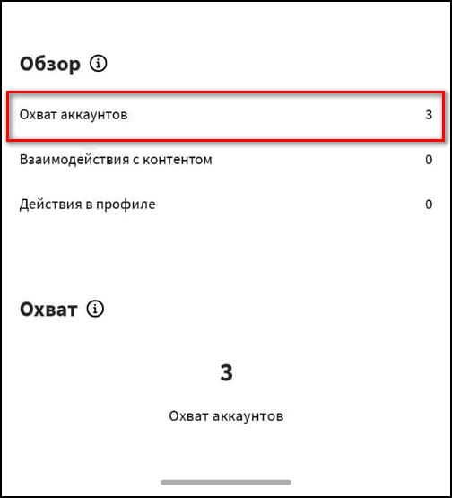
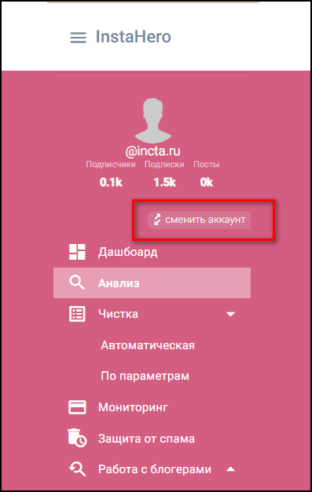
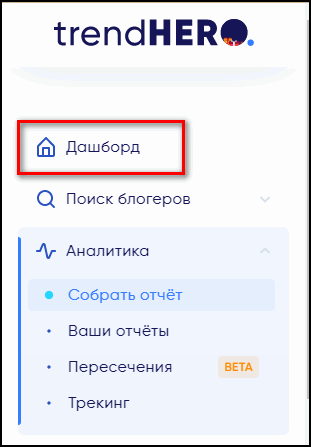

Что такое охват в Инстаграм и как его увеличить 11 способами

- Где найти вкладку охват в Инстаграме*
- Как определить охват для аккаунта самостоятельно
- Просмотр сведений через сервисы
- InstaHero: просмотр и анализ статистики
- Trendhero: смотрим охваты в Инстаграме*
- Лучшие показатели для блога в 2025
- Все причины по которым падают охваты
- 11 лучших способов увеличить охваты в Инстаграме*
- Зачем отслеживать охваты и на что они влияют
При первом продвижении блогер может задаться вопросом, что такое охват в Инстаграме*. Это раздел в статистике, который показывает количество пользователей, которые увидели публикацию. Кто то поднимает охваты при помощи накрутки, но тут нужно иметь навыки и действовать осторожно.
Где найти вкладку охват в Инстаграме*
Посмотреть охват в Инстаграме* пользователь сможет с помощью общей статистики или воспользоваться разделом «Аналитика» под каждым постом. Показатель делится на общий и отдельный, последний показывает актуальность записи. Как посмотреть в своей аккаунте:
- Зайти в Инстаграм* – нажать сверху три полоски.
- Статистика – Охваченные аккаунты.

- Посмотреть, какое количество новых профилей просмотрели страницу.
В этой категории отображаются не только подписчики, но и те пользователи, которые увидели профиль в рекомендациях, по советам в ленте или получили ссылку. Если рассматривать аналитику каждой отдельной публикации, то под постами будет указано, откуда пришли зрители.
Показатель охвата необходим, чтобы пользователь смог в дальнейшем выстроить контент-план, определить какие посты не были актуальны. Например, если публикации ранее собирали до 10 000 охвата, а после очередной размещенной всего лишь 5000 – значит тема неактуальна.
Как определить охват для аккаунта самостоятельно
Есть средний показатель, который уже выведен в разделе «Статистика» и его можно определить отдельно, основываясь на пяти последних записях. Регулярно отлеживая, можно поднять охваты в Инстаграме* и сделать профиль популярным. Самостоятельно определить охваты в Инстаграме*:
- Зайти в Инстаграм* – посмотреть пять последний публикаций.
- Собрать данные по статистике – вписать их в таблицу.

- Суммировать и разделить на количество.

Полученная цифра и есть реальный показатель охвата в Инстаграме*. Помимо расчета таким способом, можно воспользоваться сторонними приложениями и сервисами. Преимущество дополнительных инструментов в том, что не нужно постоянно проверять или вводить какие-либо входные данные – сервис выполнит это автоматически и самостоятельно.
Просмотр сведений через сервисы
Сервисы для просмотра статистики необходимы, чтобы получить полную информацию В список популярных, которые подходят для блогеров и продвижения бизнес-аккаунтов:
- Instahero. Мониторинг за страницей, возможность просматривать данные по конкурентам и выводить средний показатель по активности на каждой публикации;
- Trendhero. Показывает уровень вовлеченности аудитории, тип, по странам и городам.
Это основной список, который подходит только для общедоступных страниц. Любая статистика отображается лишь в том случае, если у владельца подключен бизнес-статус или профиль автора.
InstaHero: просмотр и анализ статистики
Чтобы воспользоваться сервисом Instahero и смотреть охваты в Инстаграме*, пользователю нужно подключить свой аккаунт. Также, нужна регистрация, после которой можно добавлять к учетной записи до трех страниц. При проверке конкурентов вводить логин и пароль не нужно – данные отображаются через вкладку: «Аналитика» и «Мониторинг». Как воспользоваться для продвижения:
- Зайти в сервис – выбрать инструмент.
- Перейти во вкладку: «Добавить аккаунт» - ввести данные от своей страницы.
- Подождать, когда пройдет первая проверка.

- Посмотреть статистические данные.
Чтобы посмотреть все последние публикации, которые были популярны среди подписчиков, нужно перейти во вкладку: «Мониторинг». Там же, пользователь узнает часы активности подписчиков, какой охват и прибавление в фанатах.
Trendhero: смотрим охваты в Инстаграме*
Сервис дает более подробную информацию, чем предыдущий. В его преимущества входит отображение параметра «Вовлеченность (ER)», который и является охватом. Он рассчитан для всего профиля и отдельных постов. Использовать TrendHero для продвижения:
- Зайти в сервис – зарегистрироваться.
- Подключить свой аккаунт в Инстаграме*, воспользовавшись разделом «Дашборд».
- Выбрать: «Собрать отчет» - посмотреть показатели активности.

В Trendhero показаны ТОПы по комментариям, лайкам, любые упоминания о странице. Дополнительно, можно посмотреть данные об интересах подписчиков и какой процент ботов есть на странице.
С помощью раздела: «Тип аудитории», блогер узнает о массфолловинге и подписчиках, которые не будут в дальнейшей активны в профиле. Их стоит удалить, чтобы они не влияли на продвижение и вывод постов в рекомендации.
Лучшие показатели для блога в 2025
Ежегодно требования к страницам меняются и в 2025 также будут изменены технические показатели, которые отображают качество контента. К примеру, если у блогера менее 5000 охвата, то его профиль не подходит для рекламного сотрудничества. Охват по объему аудитории:
| Подписчики: | ER: | Охват: |
| >10 000 | 20% | 6 000 |
| От 20 000 | 10-15% | 15 000 |
| <50 000 | 5-8% | 30 000 |
Показатели рассчитывают для «идеальной ситуации», когда в профиле постоянно есть активность со стороны подписчиков. Отклонения в пару процентов – не влияют на сотрудничество и могут быть подходящими для активного продвижения. Это зависит от тематики, праздничного времени, дополнительных способов продвижения. К примеру, если тема популярна только в узких кругах, то показатель охвата в 10 000 – средний. Важно, чтобы помимо просмотров, были лайки и комментарии.
Все причины по которым падают охваты
Если падают охваты в Инстаграме*, то причина может быть как неактуальность выбранной темы, так и некачественно выполненный визуальный контент.
- правильно ли заполнено описание;
- какая аватарка и Актуальные;
- как часто автор добавляет Истории и что именно публикует в них;
- разнообразность контента: от одиночных снимков до Reels.
- переполненность ниши. Если тема слишком популярна, среди конкурентов есть гига-блоги;
- некачественный контент. Нет структуры текста, отсутствует вопрос или ссылка в конце, автор не проверяет информацию;
- неподходящие видео или фото. Визуальное исполнение отличается от темы тектового описания;
- однотипность. Автор делает фото/видео в одном ракурсе, использует одну мелодию на фоне, размещает только фотографии;
- искусственный контент. Инстаграм* отходит от тренда с шаблонами и картинок с текстом, отдавая предпочтение фотографиям с живыми людьми.
Даже стиль обработки может повлиять на продвижение профиля. У авторов в 2025 есть выбор: либо не использовать фильтры и прессеты, либо создавать только креативный контент, выполняя каждый снимок в нереалистичном стиле.
11 лучших способов увеличить охваты в Инстаграме*
Чтобы поднять охваты в Инстаграме* за короткий срок, автору нужно следовать нескольким правилам. ТОП-10 для увеличения аудитория и активности:
- Проведение розыгрышей через Winner, быстро, просто, безопасно для вашего аккаунта и честно для ваших подписчиков. Попробовать можно бесплатно по нашей ссылке. По статистике увеличиваются охваты + растет аудитория на 5-35% в зависимости от типа розыгрыша и призов.
- Stories и Актуальное. В Истории стоит размещать временные публикации, как начало дня, пожелания или смешные моменты. В Актуальное добавляют информацию, которую подписчики должны помнить или обладать быстрым доступом: прайс, рекламные предложения, график работы шоурума/Инстаграм*-магазина, важные сведения об авторе.
- Reels. Новые раздел, который поможет быстрее продвигать профиль. Короткие видео будут рекомендованы зрителям по интересам и среди них могут попадаться даже непопулярные записи.
- Сотрудничество с другими блогерами. Коллаборации привлекают внимание из-за того, что авторам блогов доверяют их читатели. И есть вероятность, что после такого сотрудничества поднимутся охваты на публикациях.
- «Прогрев». Прежде чем рассказать подписчикам интересную новость, нужно записать пару Историй, где каждый раз упоминать «сенсацию, о которой в скором времени будет пост».
- Эксперименты с контентом. Есть несколько тип контента, который можно размещать на странице: короткие видео, длинные клипы, «Галерея фото», одиночные фотографии. С помощью «Карусели» можно создать длинное панорамное фото, а с видео – записать мини-сериал и опубликовать его в IGTV.
- Общение с подписчиками. Для повышения охвата блогера от 10 000 подписчиков создают отдельные Телеграм-каналы, где переписываются с аудиторией. Это создает эффект приближенности к кумиру.
- Реклама новых постов. С помощью функции «Поделиться в Сторис», автор может пересылать публикации в Историю и оформлять.
- «Открою секрет». Если блогер оригинально оформляет фото или видео, он может записать короткий ролик с рекомендациями любимых приложений.
- Мини-советы. В Историях можно размещать свои ежедневные практики, советы, которые оформляют в виде чек-листов.
- Общение с подписчиками в комментариях. Необходима обратная связь, чтобы фанаты могли задать вопрос и в короткий срок получить ответ от кумира.
Основные правила продвижения: не пренебрегать обратной связью, делиться видео и фото, работать с другими блогерами. Важно, чтобы страница была открыта и подписчики могли предварительно зайти в профиль, ознакомиться с публикациями и принять выбор о подписке. Чем если аккаунт будет закрыт: нужно подавать заявку, дождаться уведомления о принятии.
Зачем отслеживать охваты и на что они влияют
Охваты – это отображение активности в профиле. Если страница непросматриваема, то это отобразится в охватах. Кроме этого, показатель необходим:
- для рекламного сотрудничество. Рекламодатель подбирает будущую площадку для размещения с помощью метрики охвата;
- отображает недостатки в продвижении. Какие ошибки были допущены, правильно ли составлен контент-план;
- возложены ли на страницу ограничения и присутствие теневого бана.
Чтобы определить, какие проблемы есть в профиле, нужно сравнить показатели активности. Если на предыдущих записях до 3000 просмотров, а на новых всего лишь 100 – значит контент неактуален. Но если тема была изменена, снимки лучшего качества, а охваты не растут – возможна теневая блокировка.